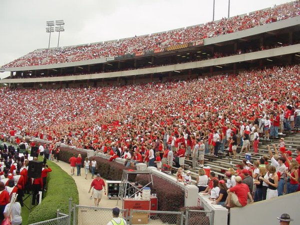
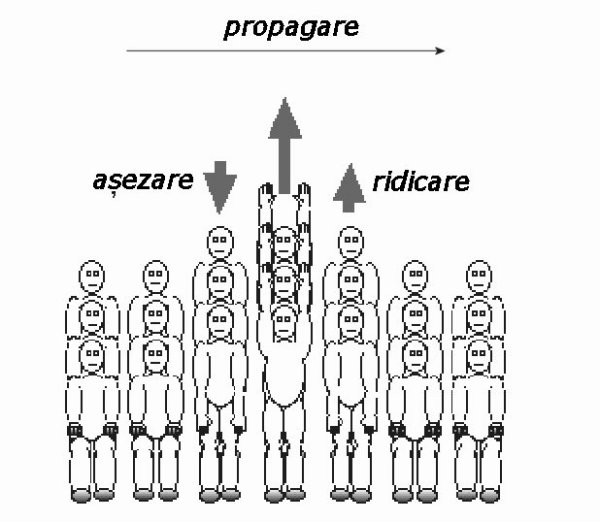

Pe marile stadioane, spectatorii înşişi devin, din când în când, protagoniştii unui spectacol, care antrenează, rând pe rând, zeci de mii de oameni. Este suficient ca doar câteva zeci de oameni să se ridice brusc în picioare, apoi să se aşeze. Cei aflaţi lângă, se vor ridica şi ei, cu oarecare întârziere. Astfel, mişcarea în sus şi în jos a spectatorilor se transmite, din aproape în aproape, de jurminus;împrejurul întregului stadion! (figura 1C−1)

Fig. 1C-1. Transmiterea, din aproape în aproape, a mişcărilor în sus şi în jos ale spectatorilor de pe un stadion.
Niciunul dintre spectatori nu se deplasează de jur−împrejurul stadionului, doar "perturbaţia" produsă de ridicarea şi aşezarea lor pe scaune se transmite, din aproape în aproape (figura 1C−2).

Fig. 1C-2. Reprezentarea schematica a transmiterii, din aproape în aproape, a perturbaţiei produsă de ridicarea şi aşezarea pe scaune a spectatorilor.
Spectacolul oferit de spectatorii înşişi este asemănător unui "val" care avansează cu aproximativ 12 m/s de jur−împrejurul stadionului.
Astfel de perturbaţii care se răspândesc din aproape în aproape se petrec în permanenţă în jurul tău. Valurile, sunetele, lumina, trepidaţiile solului şi transmisiile radio sunt doar câteva exemple!